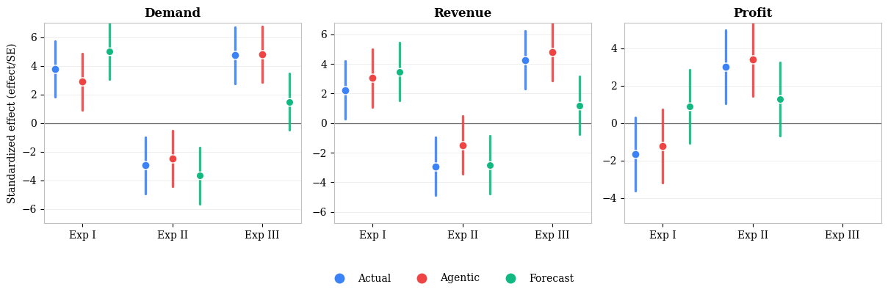
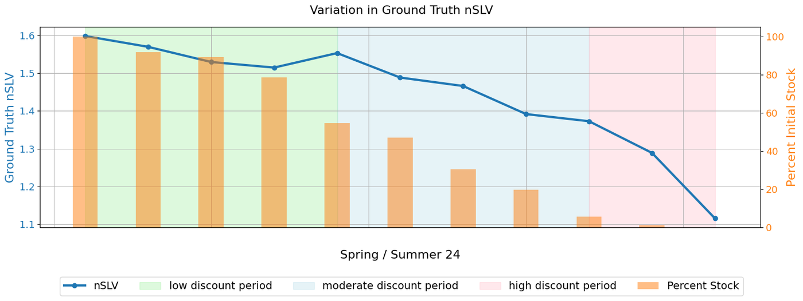
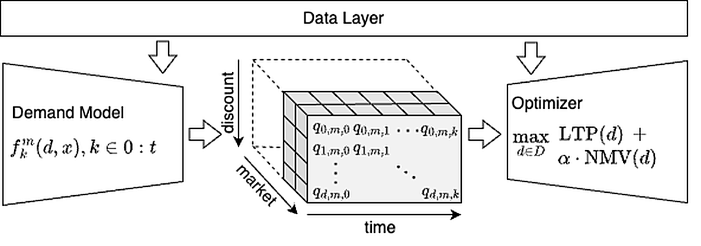
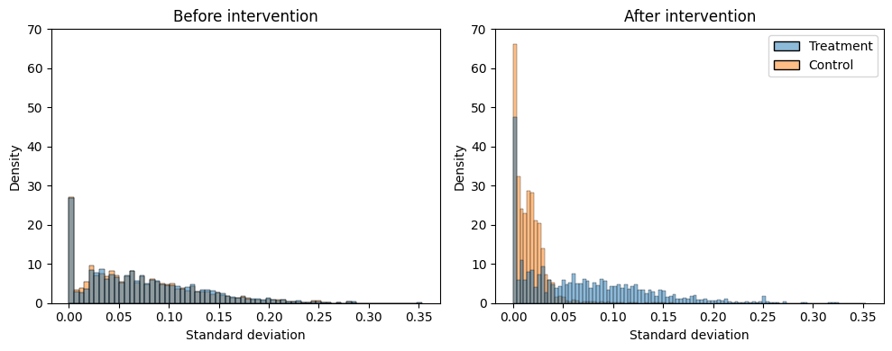
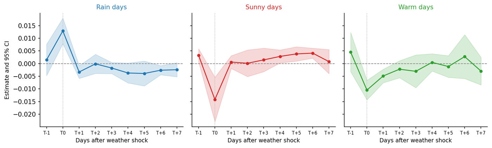
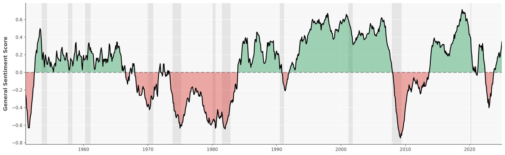
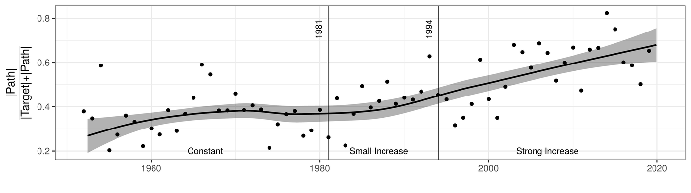

I am an Economist and currently Senior Applied Scientist at Zalando, working on experimental and observational causal inference in the domains of digital experimentation and algorithmic pricing.
I design, run and analyse large-scale online field experiments, work on long-term measurement problems, and more recently use LLMs for experimentation and economic measurement. Much of this work runs in production, affects millions of customers and products across Europe, and enables evidence-based decision making at scale.
My previous work experience has taken me from central banking to academic research to consumer tech.
You can reach me on LinkedIn.
Outside of work, I enjoy analog photography. Some of my favourite photos are here.
Work Experience
Zalando SE, Berlin, Germany
The University of Chicago Booth School of Business, Chicago, USA
Education
M.Sc. Economics
University of Bonn, Germany · with distinction · top 3%
Including an Erasmus exchange at ENSAE Paris, 2018/19.
B.Sc. Economics
University of Bonn, Germany · with distinction · top 3%
Zalando · Projects
We study whether personified large language model (LLM) agents can serve as synthetic customers for pricing experiments in e-commerce. Using an agent-construction pipeline and an evaluation framework spanning purchase prediction, elasticity elicitation, and simulated A/B tests, we benchmark agentic responses against observed purchase outcomes, demand elasticities recovered from transaction data, and the materialised treatment effects of pricing experiments at Zalando.
Three findings stand out. First, agent construction matters: the system prompt and persona move agent behaviour markedly closer to observed purchase decisions than the base model alone. Second, personified agents are poor predictors of individual purchase decisions, overstating realised purchase rates and falling short of supervised classifiers trained on the same interactions. They do, however, recover aggregate price elasticities, reproducing the order of magnitude and cross-group ordering of observed estimates. Third, in three simulated pricing experiments, agentic outcomes match the direction and significance of the materialised treatment effects on demand, revenue, and profit, tracking them more closely than the incumbent production demand forecast.
We read this as evidence that current LLMs carry the systematic structure of consumer behaviour and price response, but not the idiosyncratic variation of single decisions. The findings support agentic pricing experimentation as a directional screening layer that complements live experimentation.

Measuring the long-term opportunity cost of interventions remains a critical challenge in e-commerce A/B testing. While strategic levers (such as dynamic pricing, ranking algorithms, and promotional campaigns) trigger shifts in consumer behaviour that persist over months, operational constraints necessitate fast decision-making cycles that are typically limited to weekly experimental windows. Standard metrics like revenue and conversion are inherently short-sighted, biasing decisions towards immediate gains.
We introduce Stock Lifetime Value (SLV), a stock-centric metric that captures long-term opportunity cost within short experiments by aggregating expected profit from current inventory through the end of its selling lifecycle. We develop the methodology in the context of fashion e-commerce at Zalando, where stock constraints and seasonal lifecycles make the trade-off between short-term and long-term outcomes particularly relevant.
We discuss three applications: (a) SLV efficiency as a metric for article-level and customer-level A/B tests, validated against realised 18-month lifecycle outcomes; (b) SLV as an optimisation target for pricing algorithms, aligning the metric used for measurement with the objective used for decision-making; and (c) a framework for annualising treatment effects into financial reporting metrics required by business stakeholders. While our empirical setting is fashion retail, the framework applies broadly to any inventory-constrained environment where value decays over time or interventions shift demand across periods.

Sales events present unique challenges for pricing, including volatile demand patterns, rapid pricing decisions, and the need to balance short-term revenue with long-term profitability. This paper presents the design, development, and implementation of a specialised forecast-then-optimise algorithmic pricing tool for sales campaigns in fashion e-commerce.
We describe our approach combining daily-resolution demand forecasting using gradient-boosted trees with a multi-objective optimisation framework that maximises both long-term profit and net merchandise value for more than 5 million articles. Our solution addresses key limitations of existing weekly-granularity systems by implementing a forecast-then-optimise architecture that reduces pricing decision time from hours to minutes.
We validate our approach through 23 A/B tests across 12 markets during 2023–2024 sales campaigns at Zalando, one of Europe’s leading online fashion retailers. Experimental results demonstrate that the new pricing system achieves approximately 6% higher profit while maintaining equivalent performance on sales and revenue compared to the previous manual-algorithmic hybrid approach. Based on these results, the algorithm was successfully deployed to production and now handles the majority of algorithmic pricing decisions for sales campaigns at the company.

While many companies use algorithms to optimise pricing, human oversight and manual price interventions remain widespread. Algorithms can set granular prices across products and markets, while human decision-makers may contribute soft information that is not available to the system.
In our setting, a human override replaces country-specific algorithmic markdowns with a uniform product-level discount across countries. Human discretion may therefore add information but also reduce market-level pricing granularity. Using fine-grained data from one of Europe’s largest e-commerce companies, we study when human discretion improves or harms algorithmic markdown pricing under this trade-off.
In two field experiments with around 700,000 products, we find substantial heterogeneity in the profit effects of human interventions: some reduce profits, while others improve them. The quality of these interventions can be predicted with existing algorithmic tools, allowing the firm to preserve useful expert input while blocking inefficient overrides.

As climate change intensifies weather volatility and weather extremes across the globe, understanding the effects of weather on consumers becomes increasingly critical for business strategy, forecasting, and pricing in the consumer tech industry. This study examines the causal effect of weather conditions on online consumer behaviour, leveraging data from Zalando, a major European online fashion retailer. Using a panel dataset covering seven German cities from 2019 to 2024, the study exploits quasi-random daily local weather variation to establish causal identification.
Results demonstrate that weather significantly influences purchasing behaviour: rainy days increase daily fashion e-commerce sales by 1.3%, while particularly warm days and sunny days decrease sales by 1.1% and 1.3% respectively. A mechanism analysis reveals that these effects primarily stem from changes in platform engagement rather than purchasing intensity: rainy weather boosts browsing behaviour by 1.8%, while warm and sunny conditions reduce engagement.
Weather effects exhibit strong seasonal heterogeneity, with warm days positively affecting demand in spring but negatively in late summer. An analysis of intertemporal substitution shows that while rain and sunshine effects partially reverse in subsequent days, temperature effects persist without significant reversal, suggesting more enduring impacts on demand patterns.

Other projects
This research project assembles the most comprehensive dataset of Federal Reserve speeches to date by digitising previously untapped historical archives of US central bank communication. The final text corpus comprises 8,012 speeches by 586 officials spanning 1950 to early 2025. Large language models are then used to extract multidimensional measures of speech sentiment, uncertainty, linguistic style and topics.
The subsequent analysis uncovers stylised facts about 75 years of Fed communication: speech frequency more than doubled after the mid-1990s transparency reforms, and topical priorities shifted substantially in response to contemporaneous economic conditions. Speech sentiment tracks economic cycles closely, varying markedly between expansions and recessions. Most notably, around the 1990s the future appears to have overtaken the present as the dominant horizon in the overall tone of speeches, a transition characterised by growing linguistic accessibility in communication.
Present and future speech sentiment also carries economically meaningful information. On the day of delivery, speech sentiment moves Treasury rates at the short end of the yield curve by approximately 0.4 basis points, a response driven by its forward-looking component. Pre-meeting sentiment shocks also predict FOMC voting. Here, a positive shock to present-focused speech sentiment is associated with both a lower probability of dissent and less policy inaction.

This study builds two new series of US monetary policy surprises using newly digitised financial data, covering almost seven decades from 1952 to 2020. Leveraging a high-frequency identification strategy applied to daily Treasury yields in a narrow window around FOMC announcements, policy news is decomposed into a Target component, capturing surprises to the current short-term rate, and a Path component, capturing surprises to its expected future path.
The relative importance of the two surprise types has shifted markedly, consistent with a structural change in the conduct and communication of US monetary policy. The Path share of the average policy surprise held near 40 percent until the early 1980s and stands close to 70 percent today. Since Target surprises correspond to level shifts in the policy rate while Path surprises reflect news about the future stance, the rising Path share indicates that communication has become the dominant channel of US monetary policy since the 1990s.
This shift matters for monetary policy transmission. Corporate bond spreads and equity returns are driven primarily by Path rather than Target surprises. Contractionary Target surprises lower industrial production, employment and prices. In contrast to much of the existing literature, these effects are considerably stronger in recessions than in expansions.

Chicago Booth · Projects
Projects I contributed to as Research Professional for Prof. Michael Weber: literature reviews, data preparation, empirical analysis and estimation. The work drew on large-scale household surveys, randomised information experiments, and Nielsen retail scanner data on consumer purchases.
Beliefs and Portfolios: Causal Evidence ↗
Beutel, J. and M. Weber (2026). The Review of Financial Studies. doi:10.1093/rfs/hhag011
The Expected, Perceived, and Realized Inflation of US Households
Before and During the COVID19 Pandemic ↗
Weber, M., Y. Gorodnichenko and O. Coibion (2023). IMF Economic Review 71(1), 326–368. doi:10.1057/s41308-022-00175-7